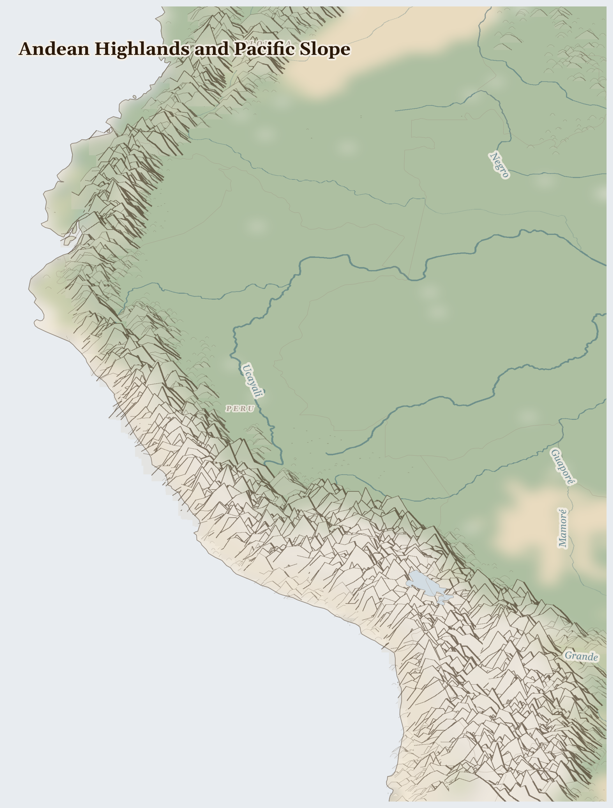

Andean Highlands and Pacific Slope
Chile, Colombia, Peru and 1 more countries
Neotropic
The Andes are the longest mountain chain in the world — a wall of white peaks running down South America. High between the summits lie golden grasslands where alpacas graze, and villages where Quechua and Aymara families have farmed the slopes for thousands of years.
How Life Works Here
Mountain farmers grow potatoes on terraces their great-great- grandparents built — and not just one kind: thousands of kinds, purple and red and knobbly. Inside the mountains are copper and lithium, metals the world wants for wires and batteries, and trucks carry them down to ships bound for factories far away.
Indigenous Quechua and Aymara farming communities, Community seed banks preserving potato and grain diversity, Women managing seed selection, storage, and local market trade.
Highland farming communities managing ancient canal infrastructure, Coastal irrigators (asparagus, grapes, avocado for export) competing for the same water, Lima's 10M residents (dependent on). …
Quechua communities resisting mine expansion through road blockades and legal challenges, Aymara and Kolla pastoral communities losing grazing land and water access to lithium …
What Is Happening
The mines bring money, but mostly not to the mountain villages — and they are thirsty: they use and sometimes spoil the water the farmers and alpacas need. High glaciers that store the villages' water are melting. So mountain communities are speaking up together, asking that their water be protected before anything else — because in the high Andes, water is life.
Something Wonderful
Potatoes come from here — every chip and mash in the world traces back to these mountains. Andean farmers keep thousands of different potatoes safe, some that grow where it freezes every night. There is even a potato park where villages guard them like a living treasure chest.
Let's Do Something Together
Sort the Treasure
Collect some small objects — coins, stones, buttons, pasta shapes. Sort them into groups. Now imagine each group is a different mineral from the ground — gold, iron, copper. Countries with lots of minerals should be rich, but often the people who live there stay poor while others take the treasure away.
- coins, stones, buttons, or small objects
- bowls for sorting
For grown-ups
The resource curse describes how mineral wealth often correlates with poverty and conflict. Extraction profits flow outward while environmental and social costs remain with local communities.
Let Us Pray Together
God, help countries with treasure in the ground to share it fairly.
Leader: We pray for the displaced. For the millions driven from their homes.
All: Lord, hear our prayer.
Leader: We pray for Colombia. Especially for Colombia, facing the most severe convergence of crises in this region.
All: Lord, hear our prayer.
Leader: We pray for the helpers. For humanitarian workers and missionaries in Andean Highlands and Pacific Slope.
All: Lord, hear our prayer.
Leader: We pray for seeds of hope. For every act of resistance and care in Andean Highlands and Pacific Slope.
All: Lord, hear our prayer.
By the waters of Babylon we sat down and wept, when we remembered Zion. As for our lyres, we hung them up on the willows that grow in that land.
Collect
Lord of all power and might, the author and giver of all good things: graft in our hearts the love of your name, increase in us true religion, nourish us with all goodness, and of your great mercy keep us in the same; through Jesus Christ your Son our Lord, who is alive and reigns with you, in the unity of the Holy Spirit, one God, now and for ever.
Amen.
Talk About It
Andean villages decide together, in meetings where everyone speaks, how to share water. How does your family decide things that matter to everyone?
One Thing We Can Do
Next time you eat potatoes — chips, mash, or roast — remember they are a gift from the Andes. Thank God for mountain farmers, and pray that their water stays clean and cold.